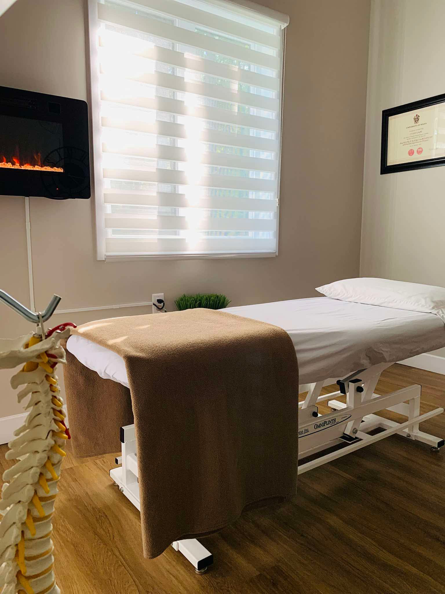

Ostéopathe diplômée, D.O.
Naturellement empathique et passionnée par la santé, j'accompagne mes patients, des nourrissons aux aînés, avec une approche manuelle douce et personnalisée, visant à libérer les restrictions tissulaires et à restaurer le mouvement.
De par ma nature empathique, j'ai toujours été intéressée par le domaine de la santé. Au cours de mes études collégiales, j'ai découvert un intérêt grandissant pour l'anatomie et la physiologie du corps humain. J'ai été séduite par l'ostéopathie étant une approche douce centrée sur le bien-être du patient.
Je suis diplômée du Collège d'Études Ostéopathiques de Montréal (CEO) où j'y ai complété six années d'études. Mon désir d'aider les gens me pousse constamment à approfondir mes connaissances ostéopathiques et anatomophysiologiques.

L'ostéopathie est une médecine manuelle fondée sur une connaissance approfondie de l'anatomie et de la physiologie. Elle vise à libérer les blocages articulaires et les restrictions tissulaires qui perturbent le bon fonctionnement du corps.
Questionnaire, anamnèse et palpation précise pour identifier la source réelle des symptômes.
Applications ciblées pour restaurer la mobilité et soulager la douleur sans médication.
Pour tous les âges, de la naissance au grand âge, en traitement ou en prévention.
"L'ostéopathie cherche à identifier la cause de vos symptômes, et non seulement à les soulager, pour vous permettre de retrouver un fonctionnement optimal."Découvrir les raisons de consulter